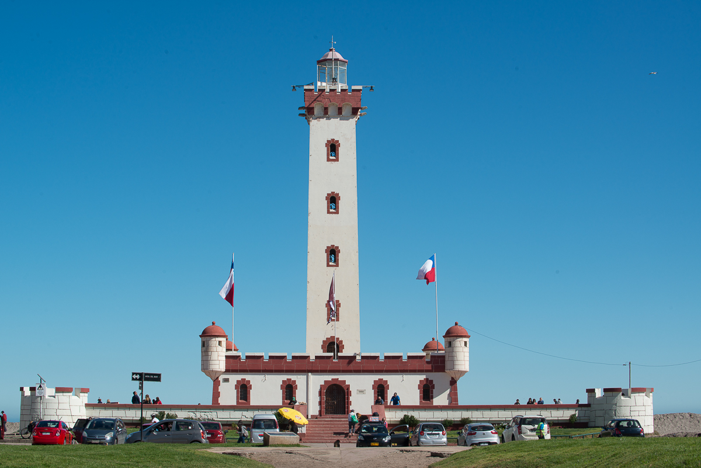

Nueva plaza en el centro
Categoría: Local
Se inaugura espacio recreativo tras 6 meses de obra, beneficiando a más de 200 familias del sector.

Categoría: Local
Se inaugura espacio recreativo tras 6 meses de obra, beneficiando a más de 200 familias del sector.
Categoría: Servicios
Se esperan cielos despejados y altas temperaturas. Se recomienda el uso de protector solar.
Categoría: Cultura
Artistas locales se preparan para el gran evento anual que se realizará en la costanera.
Categoría: Fútbol
El equipo de la ciudad avanza a la final tras una victoria agónica en el último minuto.
Categoría: Atletismo
Cierre de calles programado desde las 08:00 AM. Se esperan más de 500 corredores.
Categoría: Institucional
Abren postulaciones para jóvenes talentos que deseen representar a la región en el extranjero.
Categoría: Negocios
Se dictarán charlas gratuitas sobre digitalización financiera y gestión de inventarios.
Categoría: Economía
Las ventas en el sector centro aumentaron un 15% este mes gracias a las nuevas ferias itinerantes.
Categoría: Emprendimiento
Emprendedores locales lanzan plataforma de reparto ecológico utilizando solo bicicletas.